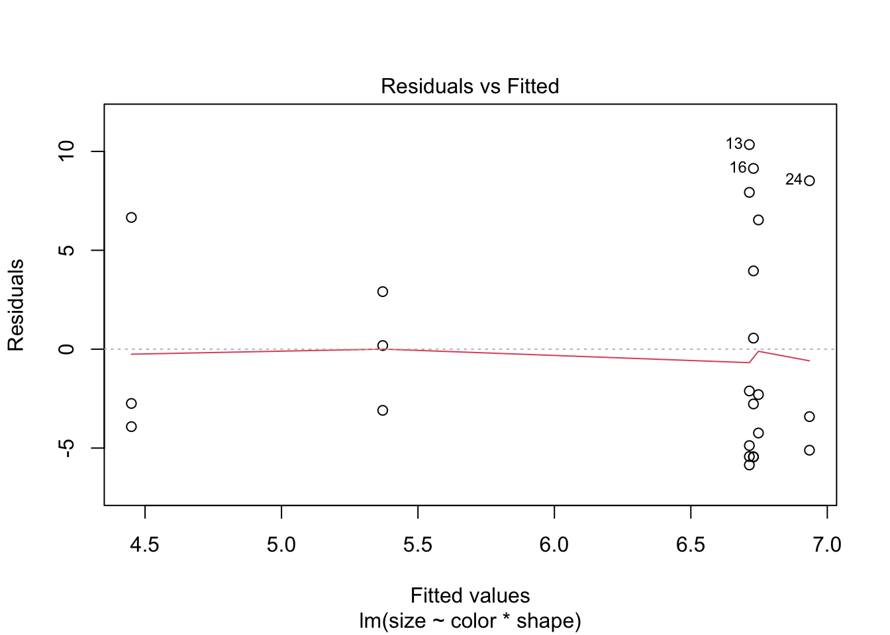

library(tidyverse)
library(emmeans)
library(car)Explanation of How to Do An ANOVA
set.seed(42)
balloon.data <- data.frame(
color = c(rep("green", 6), rep("red", 12), rep("blue", 6)),
shape = rep(c("square", "circle"), 12),
size = rpois(24, lambda = 5) * abs(rnorm(24))
) |>
mutate(
color = factor(color, levels = c("blue", "green", "red")),
shape = factor(shape, levels = c("circle", "square"))
)Setting factor levels explicitly (here blue and circle are the reference categories) ensures that contrasts have the direction you expect when interpreting results.
Check Distribution of Your Data
First check the distribution of your groups using a Shapiro-Wilk test for normality, then check the assumption of equal variance with Levene’s test.
with(balloon.data, tapply(size, shape,
FUN = function(x) shapiro.test(x)$p.value)) circle square
0.03432664 0.03150771 with(balloon.data, tapply(size, list(color, shape),
FUN = function(x) shapiro.test(x)$p.value)) circle square
blue 0.2187580 0.89890626
green 0.3246265 0.19338723
red 0.4407332 0.05066155leveneTest(size ~ color * shape, data = balloon.data)Levene's Test for Homogeneity of Variance (center = median)
Df F value Pr(>F)
group 5 0.2413 0.9388
18 If the data are non-normal or variances are unequal, consider transforming the dependent variable (e.g. log(size)) or using a non-parametric alternative (see the Assumptions section).
One-Way ANOVA
Use a one-way ANOVA when you have a single categorical predictor.
# Two-level factor — equivalent to a two-sample t-test with equal variances
summary(aov(size ~ shape, data = balloon.data)) Df Sum Sq Mean Sq F value Pr(>F)
shape 1 5.7 5.68 0.178 0.677
Residuals 22 700.9 31.86 t.test(size ~ shape, data = balloon.data, var.equal = TRUE)
Two Sample t-test
data: size by shape
t = 0.4222, df = 22, p-value = 0.677
alternative hypothesis: true difference in means between group circle and group square is not equal to 0
95 percent confidence interval:
-3.805946 5.751716
sample estimates:
mean in group circle mean in group square
6.785265 5.812380 # Three-level factor
summary(aov(size ~ color, data = balloon.data)) Df Sum Sq Mean Sq F value Pr(>F)
color 2 5.2 2.61 0.078 0.925
Residuals 21 701.4 33.40 Post-Hoc Comparisons for One-Way ANOVA
A significant omnibus F-test tells you that some groups differ, but not which ones. Use emmeans (Lenth 2016, 2024) to compute estimated marginal means and pairwise contrasts with automatic multiplicity adjustment.
balloon.lm.color <- lm(size ~ color, data = balloon.data)
# Estimated marginal means
emmeans(balloon.lm.color, ~ color) color emmean SE df lower.CL upper.CL
blue 6.15 2.36 21 1.246 11.1
green 5.60 2.36 21 0.692 10.5
red 6.72 1.67 21 3.252 10.2
Confidence level used: 0.95 # All pairwise contrasts, Tukey-adjusted
emmeans(balloon.lm.color, ~ color) |>
pairs(adjust = "tukey") contrast estimate SE df t.ratio p.value
blue - green 0.554 3.34 21 0.166 0.9849
blue - red -0.569 2.89 21 -0.197 0.9789
green - red -1.123 2.89 21 -0.389 0.9204
P value adjustment: tukey method for comparing a family of 3 estimates emmeans works with any model object (lm, lmer, glm, etc.) and integrates cleanly into tidyverse pipelines, making it more flexible than the older TukeyHSD() or glht() approaches.
Two-Way ANOVA
Use a two-way ANOVA when two categorical predictors may jointly affect your outcome.
Always Fit the Full Interaction Model
balloon.lm <- lm(size ~ color * shape, data = balloon.data)
anova(balloon.lm)Analysis of Variance Table
Response: size
Df Sum Sq Mean Sq F value Pr(>F)
color 2 5.22 2.608 0.0681 0.9344
shape 1 5.68 5.679 0.1482 0.7048
color:shape 2 5.91 2.955 0.0771 0.9261
Residuals 18 689.77 38.321 anova() gives an F-test for each term, including the color:shape interaction. The interaction p-value tests whether the effect of color depends on shape (and vice versa).
Why Not Drop the Interaction and Refit an Additive Model?
A common but problematic workflow is: if the interaction p ≥ 0.05, drop the term and refit size ~ color + shape. This should be avoided for three reasons (Mundry and Nunn 2009; Gelman 2005):
Pre-testing inflates Type I error. Conditioning the reported main-effect inference on the outcome of the interaction test miscalibrates standard errors and p-values in the second model. Type I error rates can drift to 7–10% even when the nominal level is 5%.
Failure to reject ≠ no interaction. Interaction tests are underpowered relative to main-effect tests — you typically need ~4× the sample size to detect an interaction of equivalent magnitude. Especially with small group sizes, you will almost always fail to reject the interaction null, but that does not mean the interaction is absent.
The additive model assumes additivity. Fitting
size ~ color + shapewhen the true data-generating process includes an interaction underestimates uncertainty and can bias main-effect estimates.
The solution is to always retain the interaction model and use emmeans to extract the quantities of interest — marginal main effects and, when warranted, simple effects — all from the same fit with one residual variance estimate.
Cell Means
Cell means are the model-predicted group averages at every combination of the two factors.
emmeans(balloon.lm, ~ color * shape) color shape emmean SE df lower.CL upper.CL
blue circle 6.93 3.57 18 -0.574 14.4
green circle 6.75 3.57 18 -0.761 14.3
red circle 6.73 2.53 18 1.420 12.0
blue square 5.37 3.57 18 -2.138 12.9
green square 4.45 3.57 18 -3.059 12.0
red square 6.71 2.53 18 1.405 12.0
Confidence level used: 0.95 Marginal Main Effects
Marginal main effects answer: what is the average effect of color, averaging across all shapes? These should always be reported alongside the interaction test.
# Average effect of color (averaged over both shapes)
emmeans(balloon.lm, ~ color) |>
pairs(adjust = "tukey") contrast estimate SE df t.ratio p.value
blue - green 0.554 3.57 18 0.155 0.9869
blue - red -0.569 3.10 18 -0.184 0.9816
green - red -1.123 3.10 18 -0.363 0.9303
Results are averaged over the levels of: shape
P value adjustment: tukey method for comparing a family of 3 estimates # Average effect of shape (averaged over all colors)
emmeans(balloon.lm, ~ shape) |>
pairs(adjust = "tukey") contrast estimate SE df t.ratio p.value
circle - square 1.29 2.66 18 0.485 0.6335
Results are averaged over the levels of: color These contrasts come from the same interaction model — emmeans computes them by averaging the cell means over the levels of the other factor. They represent the average simple effect, without assuming the effect is constant across levels of the other factor.
Simple Effects
Simple effects answer: what is the effect of color within each level of shape separately? Report these when the interaction term is large or scientifically meaningful.
# Effect of color within each shape
emmeans(balloon.lm, ~ color | shape) |>
pairs(adjust = "tukey")shape = circle:
contrast estimate SE df t.ratio p.value
blue - green 0.1870 5.05 18 0.037 0.9992
blue - red 0.2053 4.38 18 0.047 0.9988
green - red 0.0183 4.38 18 0.004 1.0000
shape = square:
contrast estimate SE df t.ratio p.value
blue - green 0.9210 5.05 18 0.182 0.9819
blue - red -1.3435 4.38 18 -0.307 0.9495
green - red -2.2645 4.38 18 -0.517 0.8639
P value adjustment: tukey method for comparing a family of 3 estimates # Effect of shape within each color
emmeans(balloon.lm, ~ shape | color) |>
pairs(adjust = "tukey")color = blue:
contrast estimate SE df t.ratio p.value
circle - square 1.564 5.05 18 0.309 0.7606
color = green:
contrast estimate SE df t.ratio p.value
circle - square 2.298 5.05 18 0.455 0.6548
color = red:
contrast estimate SE df t.ratio p.value
circle - square 0.015 3.57 18 0.004 0.9967What to Report
| Quantity | Question answered | Code |
|---|---|---|
| Interaction F-test | Do effects combine non-additively? | anova(balloon.lm) |
| Cell EMMs | Predicted mean at each group combination | emmeans(fit, ~ color * shape) |
| Marginal main effects | Average effect of A across levels of B | emmeans(fit, ~ A) |> pairs() |
| Simple effects | Effect of A within each level of B | emmeans(fit, ~ A | B) |> pairs() |
Always report the interaction test and marginal main effects. If the interaction is large or scientifically meaningful, additionally report simple effects. Use the same model throughout — no refitting.
Multiple Testing Across Many Outcomes
If you test the same design across many outcomes (e.g. multiple genes or proteins), adjust p-values across outcomes using the Benjamini-Hochberg false discovery rate to control the proportion of false positives:
# Example: collect contrast p-values from many outcomes then adjust together
results |>
mutate(p.adj = p.adjust(p.value, method = "BH"))Assumptions of ANOVA Analyses
Although ANOVA is fairly robust to non-normality when group sizes are equal, the assumptions should be checked.
# Residual normality
shapiro.test(residuals(balloon.lm))
Shapiro-Wilk normality test
data: residuals(balloon.lm)
W = 0.85559, p-value = 0.002781# Fitted vs. residuals plot to check homoscedasticity
plot(balloon.lm, which = 1)
If data are non-normal, consider transforming the dependent variable (e.g. log(size)). For one-way designs a non-parametric Kruskal-Wallis test is also available, though it does not extend naturally to factorial designs.
kruskal.test(size ~ color, data = balloon.data)
Kruskal-Wallis rank sum test
data: size by color
Kruskal-Wallis chi-squared = 0.24, df = 2, p-value = 0.8869References
Gelman, Andrew. 2005. “Analysis of Variance — Why It Is More Important Than Ever.” The Annals of Statistics 33 (1): 1–53. https://doi.org/10.1214/009053604000001048.
Lenth, Russell V. 2016. “Least-Squares Means: The R Package lsmeans.” Journal of Statistical Software 69 (1): 1–33. https://doi.org/10.18637/jss.v069.i01.
———. 2024. Emmeans: Estimated Marginal Means, Aka Least-Squares Means. https://CRAN.R-project.org/package=emmeans.
Mundry, Roger, and Charles L. Nunn. 2009. “Stepwise Model Fitting and Statistical Inference: Turning Noise into Signal Pollution.” The American Naturalist 173 (1): 119–23. https://doi.org/10.1086/594786.
Session Information
R version 4.5.3 (2026-03-11)
Platform: aarch64-apple-darwin20
Running under: macOS Tahoe 26.4.1
Matrix products: default
BLAS: /Library/Frameworks/R.framework/Versions/4.5-arm64/Resources/lib/libRblas.0.dylib
LAPACK: /Library/Frameworks/R.framework/Versions/4.5-arm64/Resources/lib/libRlapack.dylib; LAPACK version 3.12.1
locale:
[1] en_US.UTF-8/en_US.UTF-8/en_US.UTF-8/C/en_US.UTF-8/en_US.UTF-8
time zone: America/Detroit
tzcode source: internal
attached base packages:
[1] stats graphics grDevices utils datasets methods base
other attached packages:
[1] car_3.1-3 carData_3.0-5 emmeans_2.0.1 lubridate_1.9.4
[5] forcats_1.0.1 stringr_1.6.0 dplyr_1.1.4 purrr_1.2.1
[9] readr_2.1.6 tidyr_1.3.2 tibble_3.3.1 ggplot2_4.0.1
[13] tidyverse_2.0.0
loaded via a namespace (and not attached):
[1] sandwich_3.1-1 generics_0.1.4 stringi_1.8.7 lattice_0.22-9
[5] hms_1.1.4 digest_0.6.39 magrittr_2.0.4 evaluate_1.0.5
[9] grid_4.5.3 timechange_0.3.0 estimability_1.5.1 RColorBrewer_1.1-3
[13] mvtnorm_1.3-3 fastmap_1.2.0 Matrix_1.7-4 jsonlite_2.0.0
[17] Formula_1.2-5 survival_3.8-6 multcomp_1.4-29 scales_1.4.0
[21] TH.data_1.1-5 codetools_0.2-20 abind_1.4-8 cli_3.6.5
[25] rlang_1.1.7 splines_4.5.3 withr_3.0.2 yaml_2.3.12
[29] otel_0.2.0 tools_4.5.3 tzdb_0.5.0 coda_0.19-4.1
[33] vctrs_0.6.5 R6_2.6.1 zoo_1.8-15 lifecycle_1.0.5
[37] htmlwidgets_1.6.4 MASS_7.3-65 pkgconfig_2.0.3 pillar_1.11.1
[41] gtable_0.3.6 glue_1.8.0 xfun_0.55 tidyselect_1.2.1
[45] rstudioapi_0.17.1 knitr_1.51 dichromat_2.0-0.1 xtable_1.8-4
[49] farver_2.1.2 htmltools_0.5.9 rmarkdown_2.30 compiler_4.5.3
[53] S7_0.2.1